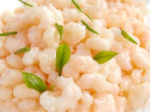

杭州美食
杭州菜质优价廉，味道风靡江南。属中国八大菜系之浙菜，“清爽别致”是杭州菜的最大特色。选料时鲜，制作精细，注重营养，讲求鲜咸合一，清淡鲜嫩。宋代大诗人苏东坡曾盛赞“天下酒宴之盛，未有如杭城也”，且有“闻香下马”的典故。
-
龙井虾仁
 杭州腊肉

杭州菜质优价廉，味道风靡江南。属中国八大菜系之浙菜，“清爽别致”是杭州菜的最大特色。选料时鲜，制作精细，注重营养，讲求鲜咸合一，清淡鲜嫩。宋代大诗人苏东坡曾盛赞“天下酒宴之盛，未有如杭城也”，且有“闻香下马”的典故。